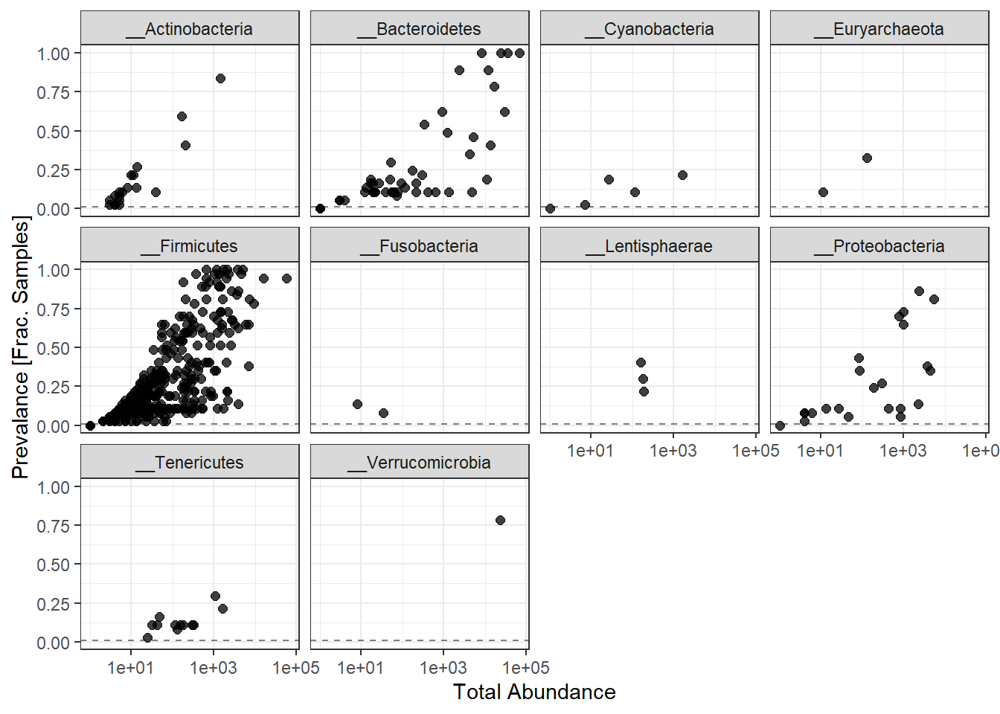
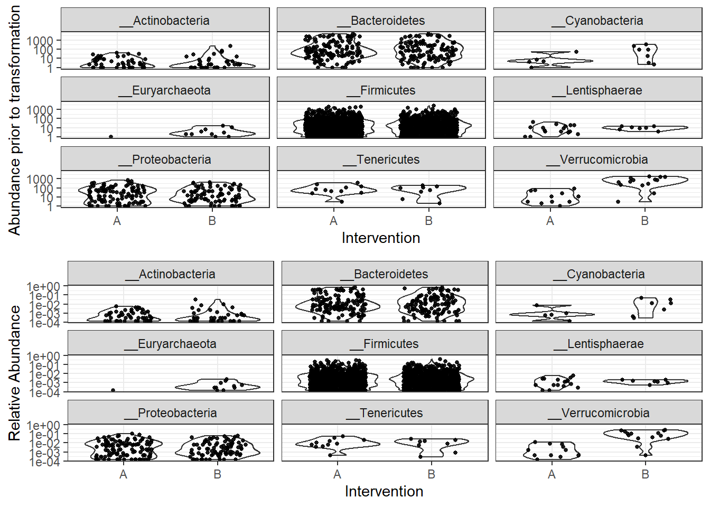
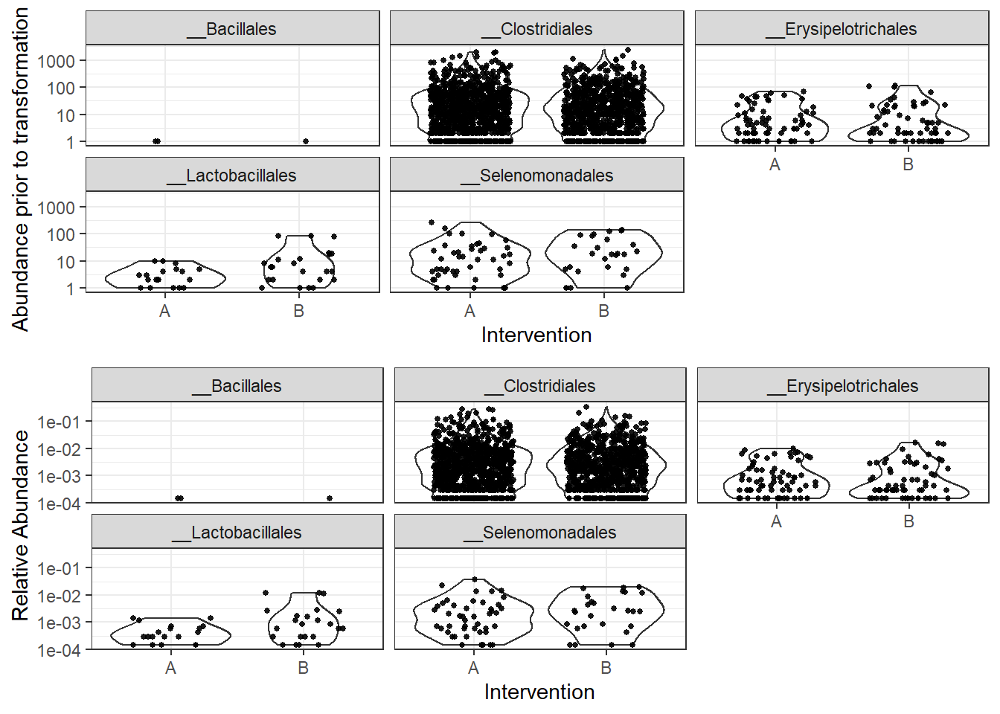
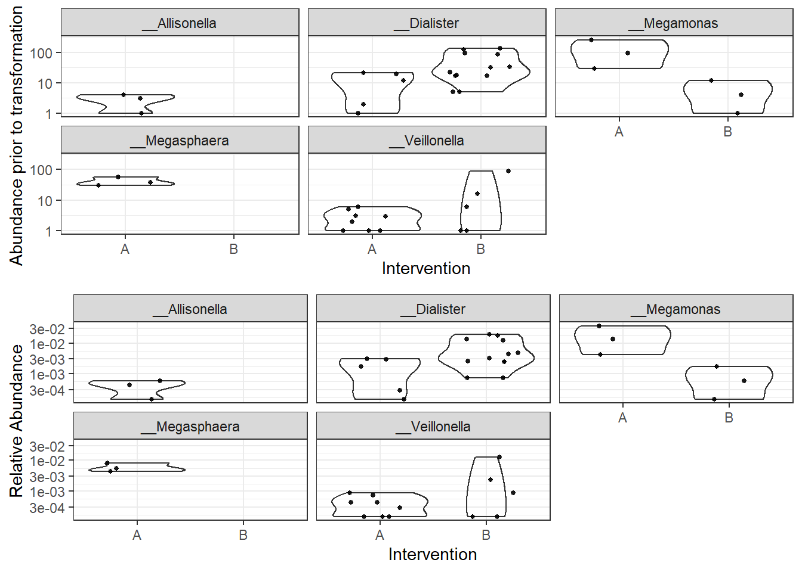
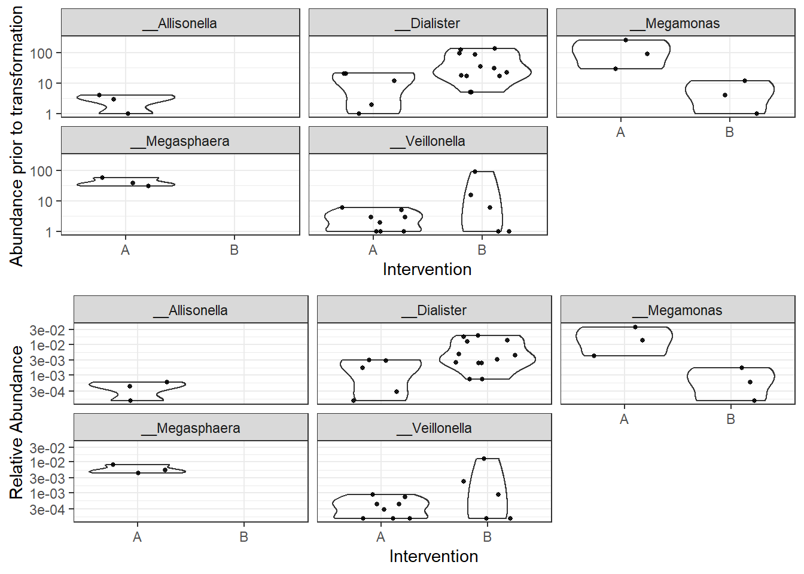
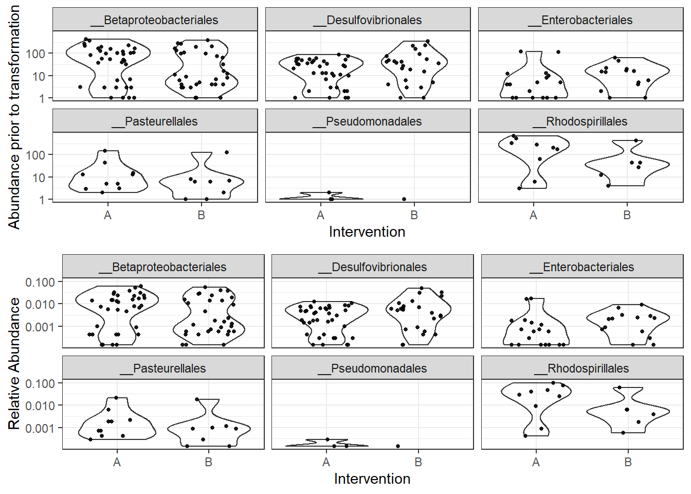
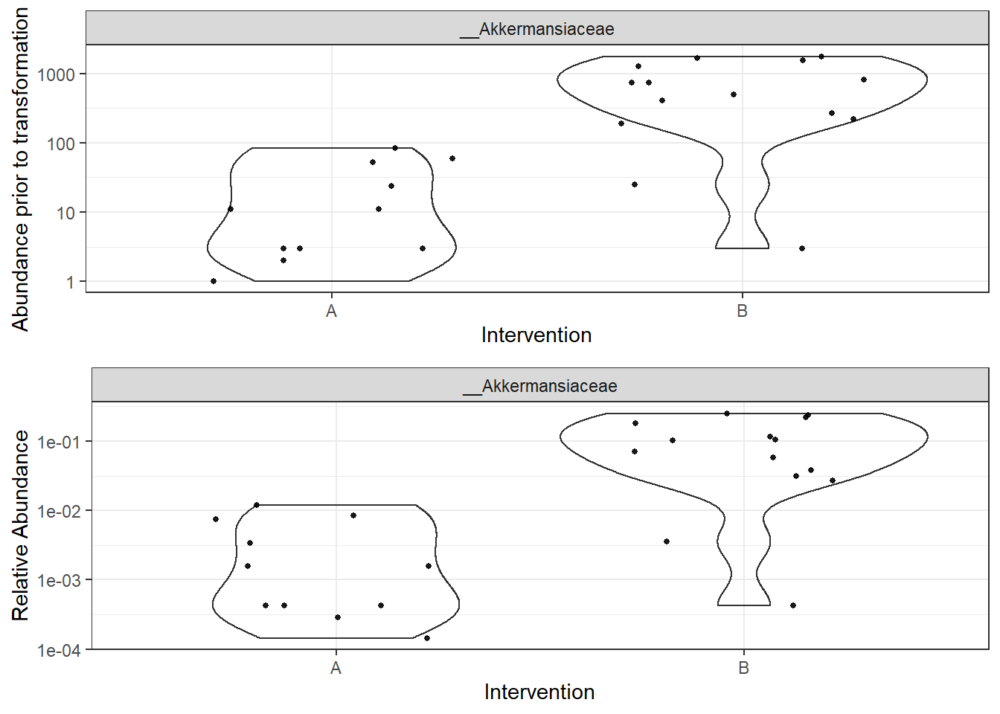

Data Processing, Checking, and Exploration
Last updated: 2020-01-30
Checks: 6 1
Knit directory: Fiber_Intervention_Study/
This reproducible R Markdown analysis was created with workflowr (version 1.5.0). The Checks tab describes the reproducibility checks that were applied when the results were created. The Past versions tab lists the development history.
The R Markdown is untracked by Git. To know which version of the R Markdown file created these results, you’ll want to first commit it to the Git repo. If you’re still working on the analysis, you can ignore this warning. When you’re finished, you can run wflow_publish to commit the R Markdown file and build the HTML.
Great job! The global environment was empty. Objects defined in the global environment can affect the analysis in your R Markdown file in unknown ways. For reproduciblity it’s best to always run the code in an empty environment.
The command set.seed(20191210) was run prior to running the code in the R Markdown file. Setting a seed ensures that any results that rely on randomness, e.g. subsampling or permutations, are reproducible.
Great job! Recording the operating system, R version, and package versions is critical for reproducibility.
Nice! There were no cached chunks for this analysis, so you can be confident that you successfully produced the results during this run.
Great job! Using relative paths to the files within your workflowr project makes it easier to run your code on other machines.
Great! You are using Git for version control. Tracking code development and connecting the code version to the results is critical for reproducibility. The version displayed above was the version of the Git repository at the time these results were generated.
Note that you need to be careful to ensure that all relevant files for the analysis have been committed to Git prior to generating the results (you can use wflow_publish or wflow_git_commit). workflowr only checks the R Markdown file, but you know if there are other scripts or data files that it depends on. Below is the status of the Git repository when the results were generated:
Ignored files:
Ignored: .Rhistory
Ignored: .Rproj.user/
Ignored: analysis/figure/
Untracked files:
Untracked: analysis/data_processing.Rmd
Untracked: reference-papers/
Unstaged changes:
Modified: code/get_data.R
Modified: code/load_packages.R
Note that any generated files, e.g. HTML, png, CSS, etc., are not included in this status report because it is ok for generated content to have uncommitted changes.
There are no past versions. Publish this analysis with wflow_publish() to start tracking its development.
Make table of sequencial cut-offs where we removed OTUs
This page contains the investigation of the raw data (OTUs) to identify if outliers are present or whether other issues emerge that may influence our results in unexpected ways. This file goes through the following checks:
- Removal of Phylum NA features
- Computation of total and average prevalence in each Phylum
- Removal Phyla with 1% or less of all samples
- Computation of total read count for each Phyla
- Plotting taxa prevalence vs total counts - identify a natural threshold if clear, if not use 5%
- Merging taxa to genus rank/level
- Abundance Value Transformations
- Plotting of abundance values by “Intervention A or B” before transformation and after
- Checking of any bimodal distributions using “subset_taxa” function and plot by “intervention”
Taxonomic Filtering
1. Removal of Phylum NA features
# show ranks
rank_names(phylo_data0)[1] "Kingdom" "Phylum" "Class" "Order" "Family" "Genus" # table of features for each phylum
table(tax_table(phylo_data0)[,"Phylum"], exclude=NULL)
__Actinobacteria __Bacteroidetes __Cyanobacteria
19 49 5
__Epsilonbacteraeota __Euryarchaeota __Firmicutes
1 2 334
__Fusobacteria __Lentisphaerae __Proteobacteria
2 3 23
__Synergistetes __Tenericutes __Verrucomicrobia
1 12 1 Note that no taxa were labels as NA so none were removed.
2. Computation of total and average prevalence in each Phylum
# compute prevalence of each feature
prevdf <- apply(X=otu_table(phylo_data0),
MARGIN= ifelse(taxa_are_rows(phylo_data0), yes=1, no=2),
FUN=function(x){sum(x>0)})
# store as data.frame with labels
prevdf <- data.frame(Prevalence=prevdf,
TotalAbundance=taxa_sums(phylo_data0),
tax_table(phylo_data0))Now we get to compute the totals and averages.
totals <- plyr::ddply(prevdf, "Phylum",
function(df1){
A <- cbind(mean(df1$Prevalence), sum(df1$Prevalence))
colnames(A) <- c("Average", "Total")
A
}
) # end
totals Phylum Average Total
1 __Actinobacteria 6.842105 130
2 __Bacteroidetes 10.816327 530
3 __Cyanobacteria 4.000000 20
4 __Epsilonbacteraeota 5.000000 5
5 __Euryarchaeota 8.000000 16
6 __Firmicutes 11.395210 3806
7 __Fusobacteria 4.000000 8
8 __Lentisphaerae 11.333333 34
9 __Proteobacteria 10.826087 249
10 __Synergistetes 5.000000 5
11 __Tenericutes 4.750000 57
12 __Verrucomicrobia 29.000000 29The Phylum that appear to be quite low in abundance are Cyanobacteria, Epsilonbacteraeota, Euryarchaeota, Fusobacteria and Synergistetes. However, any of the taxa under a total of 100 may be suspect. First, we will remove the taxa that are clearly too low in abudance (<=5).
filterPhyla <- totals$Phylum[totals$Total <= 5, drop=T] # drop allows some of the attributes to be removed
phylo_data1 <- subset_taxa(phylo_data0, !Phylum %in% filterPhyla)
phylo_data1phyloseq-class experiment-level object
otu_table() OTU Table: [ 450 taxa and 37 samples ]
sample_data() Sample Data: [ 37 samples by 90 sample variables ]
tax_table() Taxonomy Table: [ 450 taxa by 6 taxonomic ranks ]
phy_tree() Phylogenetic Tree: [ 450 tips and 449 internal nodes ]Next, we explore the taxa in more detail next as we move to remove some of these low abundance taxa.
3. Removal Phyla with 1% or less of all samples (prevalence filtering)
prevdf1 <- subset(prevdf, Phylum %in% get_taxa_unique(phylo_data1, "Phylum"))
ggplot(prevdf1, aes(TotalAbundance+1,
Prevalence/nsamples(phylo_data0))) +
geom_hline(yintercept=0.01, alpha=0.5, linetype=2)+
geom_point(size=2, alpha=0.75) +
scale_x_log10()+
labs(x="Total Abundance", y="Prevalance [Frac. Samples]")+
facet_wrap(.~Phylum) + theme(legend.position = "none")
Note: for plotting purposes, a \(+1\) was added to all TotalAbundances to avoid a taking the log of 0.
Next, we define a prevalence threshold, that way the taxa can be pruned to a prespecified level. In this study, we used 0.05 (5%) of total samples.
prevalenceThreshold <- 0.01*nsamples(phylo_data0)
prevalenceThreshold[1] 0.37# execute the filtering to this level
keepTaxa <- rownames(prevdf1)[(prevdf1$Prevalence >= prevalenceThreshold)]
phylo_data2 <- prune_taxa(keepTaxa, phylo_data1)4. Merge taxa (to genus level)
genusNames <- get_taxa_unique(phylo_data2, "Genus")
#phylo_data3 <- merge_taxa(phylo_data2, genusNames, genusNames[which.max(taxa_sums(phylo_data2)[genusNames])])
# How many genera would be present after filtering?
length(get_taxa_unique(phylo_data2, taxonomic.rank = "Genus"))[1] 159## [1] 49
phylo_data3 = tax_glom(phylo_data2, "Genus", NArm = TRUE)4. Relative Adbundance Plot
plot_abundance = function(physeq, title = "", ylab="Abundance"){
# Arbitrary subset, based on Phylum, for plotting
#p1f = subset_taxa(physeq, Phylum %in% "__Firmicutes")
mphyseq = psmelt(physeq)
mphyseq <- subset(mphyseq, Abundance > 0)
ggplot(data = mphyseq, mapping = aes_string(x = "Intervention", y = "Abundance")) +
geom_violin(fill = NA) +
geom_point(size = 1, alpha = 0.9,
position = position_jitter(width = 0.3)) +
scale_y_log10()+
labs(y=ylab)+
theme(legend.position="none")
}
# Transform to relative abundance. Save as new object.
phylo_data3ra = transform_sample_counts(phylo_data3, function(x){x / sum(x)})
plotBefore = plot_abundance(phylo_data3, ylab="Abundance prior to transformation")
plotAfter = plot_abundance(phylo_data3ra, ylab="Relative Abundance")
# Combine each plot into one graphic.
grid.arrange(nrow = 2, plotBefore, plotAfter)
Abundance by Phylum
plot_abundance = function(physeq, title = "", Facet = "Phylum", ylab="Abundance"){
# Arbitrary subset, based on Phylum, for plotting
#p1f = subset_taxa(physeq, Phylum %in% "__Firmicutes")
mphyseq = psmelt(physeq)
mphyseq <- subset(mphyseq, Abundance > 0)
ggplot(data = mphyseq, mapping = aes_string(x = "Intervention", y = "Abundance")) +
geom_violin(fill = NA) +
geom_point(size = 1, alpha = 0.9,
position = position_jitter(width = 0.3)) +
facet_wrap(facets = Facet) + scale_y_log10()+
labs(y=ylab)+
theme(legend.position="none")
}
plotBefore = plot_abundance(phylo_data3, ylab="Abundance prior to transformation")
plotAfter = plot_abundance(phylo_data3ra, ylab="Relative Abundance")
# Combine each plot into one graphic.
grid.arrange(nrow = 2, plotBefore, plotAfter) Now, let’s dive into the abundances in more detail. We will investigate the bacteroidetes, firmicute, verrucomicrobia and proteobacteria in more detail (down to the Order).
Phylum: Bacteroidetes
plot_abundance = function(physeq, title = "", Facet = "Order", ylab="Abundance"){
# Arbitrary subset, based on Phylum, for plotting
p1f = subset_taxa(physeq, Phylum %in% "__Bacteroidetes")
mphyseq = psmelt(p1f)
mphyseq <- subset(mphyseq, Abundance > 0)
ggplot(data = mphyseq, mapping = aes_string(x = "Intervention", y = "Abundance")) +
geom_violin(fill = NA) +
geom_point(size = 1, alpha = 0.9,
position = position_jitter(width = 0.3)) +
facet_wrap(facets = Facet) + scale_y_log10()+
labs(y=ylab)+
theme(legend.position="none")
}
plotBefore = plot_abundance(phylo_data3,
ylab="Abundance prior to transformation")
plotAfter = plot_abundance(phylo_data3ra,
ylab="Relative Abundance")
# Combine each plot into one graphic.
grid.arrange(nrow = 2, plotBefore, plotAfter)
Flav. was only present in intervention group A.
Phylum: Firmicutes
plot_abundance = function(physeq, title = "", Facet = "Order", ylab="Abundance"){
# Arbitrary subset, based on Phylum, for plotting
p1f = subset_taxa(physeq, Phylum %in% "__Firmicutes")
mphyseq = psmelt(p1f)
mphyseq <- subset(mphyseq, Abundance > 0)
ggplot(data = mphyseq, mapping = aes_string(x = "Intervention", y = "Abundance")) +
geom_violin(fill = NA) +
geom_point(size = 1, alpha = 0.9,
position = position_jitter(width = 0.3)) +
facet_wrap(facets = Facet) + scale_y_log10()+
labs(y=ylab)+
theme(legend.position="none")
}
plotBefore = plot_abundance(phylo_data3,
ylab="Abundance prior to transformation")
plotAfter = plot_abundance(phylo_data3ra,
ylab="Relative Abundance")
# Combine each plot into one graphic.
grid.arrange(nrow = 2, plotBefore, plotAfter)
Order: Selenomonadales
plot_abundance = function(physeq, title = "", Facet = "Genus", ylab="Abundance"){
# Arbitrary subset, based on Phylum, for plotting
p1f = subset_taxa(physeq, Phylum %in% "__Firmicutes" & Order %in% "__Selenomonadales" & Family %in% "__Veillonellaceae")
mphyseq = psmelt(p1f)
mphyseq <- subset(mphyseq, Abundance > 0)
ggplot(data = mphyseq, mapping = aes_string(x = "Intervention", y = "Abundance")) +
geom_violin(fill = NA) +
geom_point(size = 1, alpha = 0.9,
position = position_jitter(width = 0.3)) +
facet_wrap(facets = Facet) + scale_y_log10()+
labs(y=ylab)+
theme(legend.position="none")
}
plotBefore = plot_abundance(phylo_data3,
ylab="Abundance prior to transformation")
plotAfter = plot_abundance(phylo_data3ra,
ylab="Relative Abundance")
# Combine each plot into one graphic.
grid.arrange(nrow = 2, plotBefore, plotAfter)
Family: Veillonellaceae
plot_abundance = function(physeq, title = "", Facet = "Genus", ylab="Abundance"){
# Arbitrary subset, based on Phylum, for plotting
p1f = subset_taxa(physeq, Phylum %in% "__Firmicutes" & Order %in% "__Selenomonadales" & Family %in% "__Veillonellaceae")
mphyseq = psmelt(p1f)
mphyseq <- subset(mphyseq, Abundance > 0)
ggplot(data = mphyseq, mapping = aes_string(x = "Intervention", y = "Abundance")) +
geom_violin(fill = NA) +
geom_point(size = 1, alpha = 0.9,
position = position_jitter(width = 0.3)) +
facet_wrap(facets = Facet) + scale_y_log10()+
labs(y=ylab)+
theme(legend.position="none")
}
plotBefore = plot_abundance(phylo_data3,
ylab="Abundance prior to transformation")
plotAfter = plot_abundance(phylo_data3ra,
ylab="Relative Abundance")
# Combine each plot into one graphic.
grid.arrange(nrow = 2, plotBefore, plotAfter)
Note the Genus: Allisonella & Megasphaera were only present in Int. Group A.
Phylum: Proteobacteria
plot_abundance = function(physeq, title = "", Facet = "Order", ylab="Abundance"){
# Arbitrary subset, based on Phylum, for plotting
p1f = subset_taxa(physeq, Phylum %in% "__Proteobacteria")
mphyseq = psmelt(p1f)
mphyseq <- subset(mphyseq, Abundance > 0)
ggplot(data = mphyseq, mapping = aes_string(x = "Intervention", y = "Abundance")) +
geom_violin(fill = NA) +
geom_point(size = 1, alpha = 0.9,
position = position_jitter(width = 0.3)) +
facet_wrap(facets = Facet) + scale_y_log10()+
labs(y=ylab)+
theme(legend.position="none")
}
plotBefore = plot_abundance(phylo_data3,
ylab="Abundance prior to transformation")
plotAfter = plot_abundance(phylo_data3ra,
ylab="Relative Abundance")
# Combine each plot into one graphic.
grid.arrange(nrow = 2, plotBefore, plotAfter)
Phylum: Verrucomicrobia
plot_abundance = function(physeq, title = "", Facet = "Family", ylab="Abundance"){
# Arbitrary subset, based on Phylum, for plotting
p1f = subset_taxa(physeq, Phylum %in% "__Verrucomicrobia")
mphyseq = psmelt(p1f)
mphyseq <- subset(mphyseq, Abundance > 0)
ggplot(data = mphyseq, mapping = aes_string(x = "Intervention", y = "Abundance")) +
geom_violin(fill = NA) +
geom_point(size = 1, alpha = 0.9,
position = position_jitter(width = 0.3)) +
facet_wrap(facets = Facet) + scale_y_log10()+
labs(y=ylab)+
theme(legend.position="none")
}
plotBefore = plot_abundance(phylo_data3,
ylab="Abundance prior to transformation")Warning in prune_taxa(taxa, phy_tree(x)): prune_taxa attempted to reduce tree to 1 or fewer tips.
tree replaced with NULL.plotAfter = plot_abundance(phylo_data3ra,
ylab="Relative Abundance")Warning in prune_taxa(taxa, phy_tree(x)): prune_taxa attempted to reduce tree to 1 or fewer tips.
tree replaced with NULL.# Combine each plot into one graphic.
grid.arrange(nrow = 2, plotBefore, plotAfter)
sessionInfo()R version 3.6.1 (2019-07-05)
Platform: x86_64-w64-mingw32/x64 (64-bit)
Running under: Windows 10 x64 (build 18362)
Matrix products: default
locale:
[1] LC_COLLATE=English_United States.1252
[2] LC_CTYPE=English_United States.1252
[3] LC_MONETARY=English_United States.1252
[4] LC_NUMERIC=C
[5] LC_TIME=English_United States.1252
attached base packages:
[1] stats graphics grDevices utils datasets methods base
other attached packages:
[1] gridExtra_2.3 xtable_1.8-4 kableExtra_1.1.0 plyr_1.8.4
[5] data.table_1.12.6 readxl_1.3.1 forcats_0.4.0 stringr_1.4.0
[9] dplyr_0.8.3 purrr_0.3.3 readr_1.3.1 tidyr_1.0.0
[13] tibble_2.1.3 ggplot2_3.2.1 tidyverse_1.3.0 phyloseq_1.30.0
loaded via a namespace (and not attached):
[1] nlme_3.1-140 fs_1.3.1 lubridate_1.7.4
[4] webshot_0.5.2 httr_1.4.1 rprojroot_1.3-2
[7] tools_3.6.1 backports_1.1.5 R6_2.4.1
[10] vegan_2.5-6 DBI_1.0.0 lazyeval_0.2.2
[13] BiocGenerics_0.32.0 mgcv_1.8-28 colorspace_1.4-1
[16] permute_0.9-5 ade4_1.7-13 withr_2.1.2
[19] tidyselect_0.2.5 compiler_3.6.1 git2r_0.26.1
[22] cli_1.1.0 rvest_0.3.5 Biobase_2.46.0
[25] xml2_1.2.2 labeling_0.3 scales_1.1.0
[28] digest_0.6.23 rmarkdown_1.18 XVector_0.26.0
[31] pkgconfig_2.0.3 htmltools_0.4.0 dbplyr_1.4.2
[34] rlang_0.4.2 rstudioapi_0.10 farver_2.0.1
[37] generics_0.0.2 jsonlite_1.6 magrittr_1.5
[40] biomformat_1.14.0 Matrix_1.2-17 Rcpp_1.0.3
[43] munsell_0.5.0 S4Vectors_0.24.1 Rhdf5lib_1.8.0
[46] ape_5.3 lifecycle_0.1.0 stringi_1.4.3
[49] yaml_2.2.0 MASS_7.3-51.4 zlibbioc_1.32.0
[52] rhdf5_2.30.1 grid_3.6.1 parallel_3.6.1
[55] promises_1.1.0 crayon_1.3.4 lattice_0.20-38
[58] Biostrings_2.54.0 haven_2.2.0 splines_3.6.1
[61] multtest_2.42.0 hms_0.5.2 zeallot_0.1.0
[64] knitr_1.26 pillar_1.4.2 igraph_1.2.4.2
[67] reshape2_1.4.3 codetools_0.2-16 stats4_3.6.1
[70] reprex_0.3.0 glue_1.3.1 evaluate_0.14
[73] modelr_0.1.5 vctrs_0.2.0 httpuv_1.5.2
[76] foreach_1.4.7 cellranger_1.1.0 gtable_0.3.0
[79] assertthat_0.2.1 xfun_0.11 broom_0.5.2
[82] later_1.0.0 viridisLite_0.3.0 survival_2.44-1.1
[85] iterators_1.0.12 IRanges_2.20.1 workflowr_1.5.0
[88] cluster_2.1.0